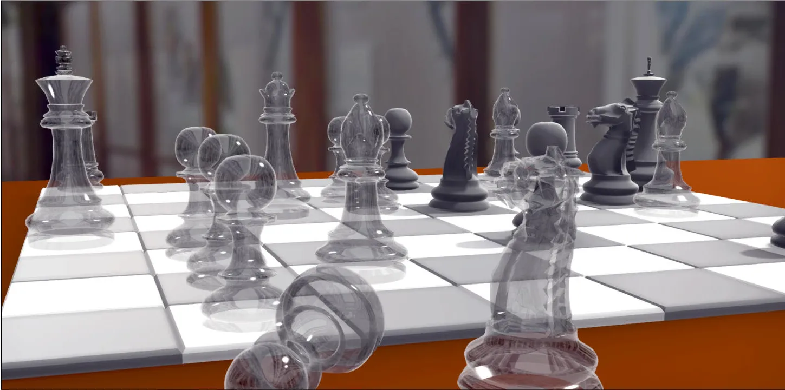

RealTime-Rendering17-Weighted Blended OIT
Weighted Blended OIT

核心思想
Weighted Blended Order-Independent Transparency (WBOIT) 是一种非常实用的顺序无关半透明渲染技术。它通过在着色器中对每个片元的颜色和透明度进行加权求和，巧妙地避免了传统半透明渲染中复杂且耗时的排序问题，在性能和效果之间取得了很好的平衡。
- 为什么需要加权？ 传统的半透明混合（SrcAlpha, OneMinusSrcAlpha）对顺序极其敏感。WBOIT通过一个启发式的权重函数，为每个片元分配一个权重。这个权重通常与片元的深度和透明度相关，使得离相机更近或更不透明的片元对最终颜色的贡献更大，从而在统计意义上模拟出正确的遮挡关系。
- 优点：实现简单，仅需两个额外的渲染目标（Render Target），性能开销低，非常适合粒子系统、毛发、树叶等具有大量半透明元素的场景。
- 缺点：它是一种近似算法，并非物理正确。当半透明物体的透明度极低（接近不透明）时，可能会出现视觉瑕疵。此外，权重函数需要根据具体场景进行调参，以达到最佳视觉效果。
算法剖析
WBOIT算法的实现主要包含两个Pass：Accumulation Pass 和 Composite Pass。
数据结构
首先，需要创建两个屏幕分辨率大小的纹理（Render Target），用于在Accumulation Pass中存储数据：
| 渲染目标 | 格式 | 初始值 | 混合因子 (Src, Dst) | 存储内容 |
|---|---|---|---|---|
| accum | RGBA16F | (0,0,0,0) | ONE, ONE | 累积的加权预乘颜色 (color.rgb color.a weight, color.a * weight) |
| reveal | R8/R16F | 1.0 | ZERO, ONE_MINUS_SRC_ALPHA | 累积的透明度 (color.a ) |
Pass 1：Accumulation Pass
这个Pass负责渲染所有的半透明物体。关键点在于不写入深度缓冲（但需进行深度测试），并且利用特殊的混合模式将数据写入到上述两个RT中。
准备工作
首先，正常渲染所有不透明物体，得到完整的背景颜色和深度缓冲。然后，绑定accum和reveal这两个渲染目标，并清除为各自的初始值。确保深度缓冲（来自不透明Pass）也被绑定，并开启深度测试，但关闭深度写入（glDepthMask(GL_FALSE)）。
片段着色器
在绘制每个半透明片元时，需要计算一个权重，并将颜色和透明度按特定格式输出到事先准备好的RT中。
1 |
|
blend Config
- 对于accum纹理，设置混合因子为(GL_ONE, GL_ONE)。这意味着每个新片元的accum值会被简单地累加到缓冲区的现有值上。
- 对于reveal纹理，设置混合因子为(GL_ZERO, GL_ONE_MINUS_SRC_ALPHA)。这个设置保证了reveal纹理中最终存储的是所有片元权重的总和。它的初始值为1.0，随着半透明片元的加入，这个值会逐渐减小（1 - a1 - a2 - …），最终值表示背景的可见度。
Pass 2：Composite Pass
当所有半透明物体都渲染完成后，你有了两个纹理：一个包含了累积的加权颜色（accum），另一个包含了背景的可见度（reveal）。最后，你需要用这两个纹理与之前渲染的不透明背景进行合成。
准备工作
绑定一个全屏四边形（Quad）的顶点数组，半丁accum和reveal纹理。将渲染目标切换回opaqueFrameBuffer.
片段着色器
1 |
|
blend Config
对于这个composite Pass，通常需要开启混合，并设置为(GL_SRC_ALPHA, GL_ONE_MINUS_SRC_ALPHA).这样就可以通过硬件混合将生成的半透明纹理叠加到不透明物体上。
pipeline梳理
Opaque Pass
绑定OpaqueFBO，开启深度测试和深度写入，关闭混合，渲染不透明物体
Accumulation Pass
blit OpaquePass的depthTexture，绑定TransparentFBO,关闭深度写入，开启深度测试，开启混合，清除accum以及reveal纹理，clearValue分别设置为vec4(0.0, 0.0, 0.0, 0.0)和1.0.
1 | glDepthMask(GL_FALSE); |
Composite Pass
绑定OpaqueFBO，关闭深度测试，开启混合，绑定激活accum以及reveal纹理.
1 | glDepthFunc(GL_ALWAYS); |
References: